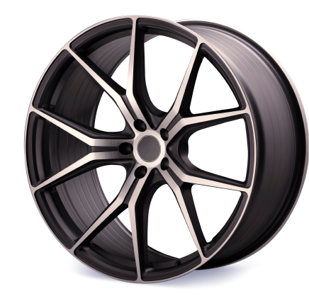

@include('partials/header.html', {
	top: 'show'
})

<div class="wrapper error-page">
	<div class="container">
		<div class="error-page__inner">
			<div class="error-page__left">
				<div class="error-page__title">
					404 <br>
					Страница не найдена
				</div>
				<div class="error-page__text">
					Извините, но такой страницы нет на нашем сайте. Возможно, вы ввели неправильный адрес или страница была удалена. <br><br>
					Попробуйте вернуться на главную страницу.
				</div>
				<a href="#" class="error-page__link error-page__link--desktop button">перейти на главную</a>
			</div>
			<div class="error-page__right">
				<div class="error-page__image">
					<svg class="error-page__image-num">
						<use xlink:href="/img/sprite-new.svg#4"></use>
					</svg>
					<svg class="error-page__image-num">
						<use xlink:href="/img/sprite-new.svg#4"></use>
					</svg>
					
				</div>
			</div>
			<a href="#" class="error-page__link error-page__link--mobile button">перейти на главную</a>
		</div>
	</div>
</div>

@include('partials/bottom-panel.html')

@include('partials/footer.html')